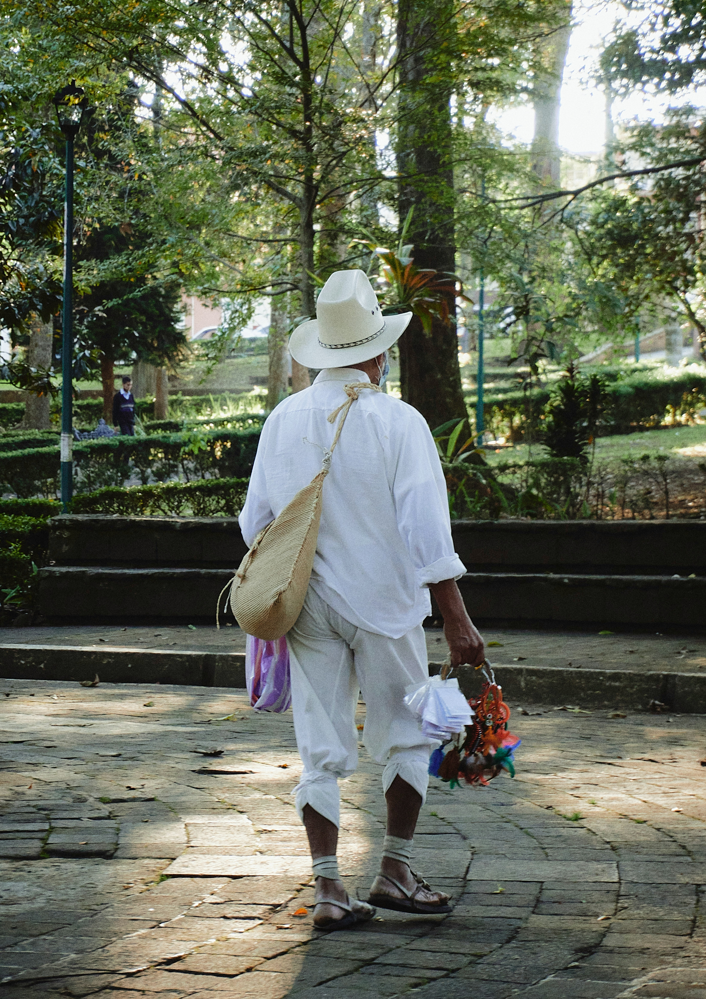
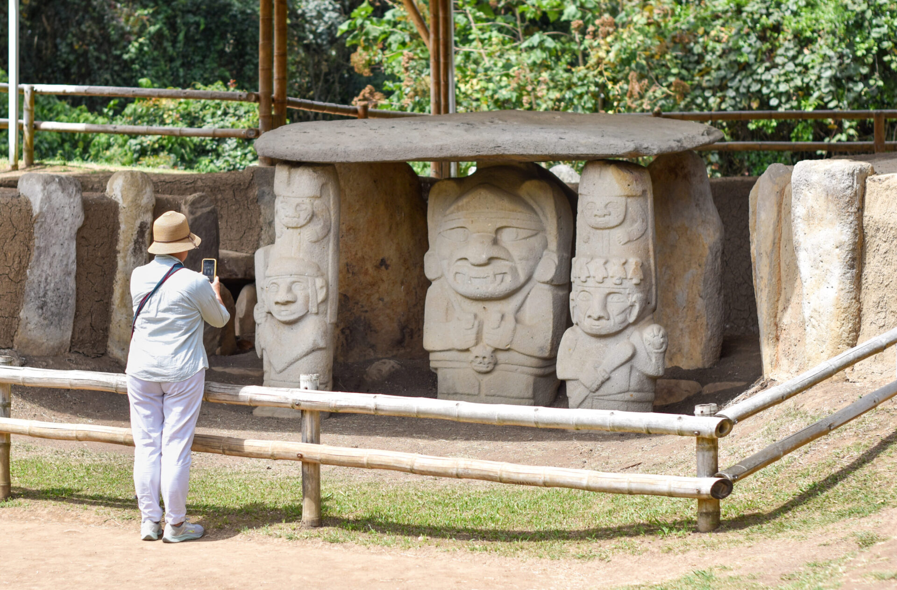
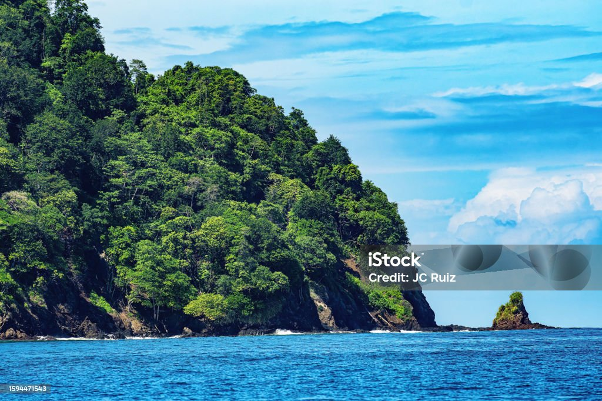

Tres lugares que no puedes dejar de visitar en el Cauca

La Ciudad Blanca de Colombia. Arquitectura colonial, gastronomía tradicional y Semana Santa Patrimonio de la Humanidad.
Más información
Parque Arqueológico Patrimonio de la Humanidad UNESCO. Más de 500 esculturas precolombinas en 78 km².
Más información
Reserva natural única en el Pacífico colombiano. Santuario de ballenas jorobadas de julio a noviembre.
Más información| Destino | Mejor época | Temperatura | Actividad principal |
|---|---|---|---|
| Popayán | Todo el año | 18°C promedio | Turismo cultural |
| San Agustín | Diciembre – Febrero | 18°C promedio | Senderismo arqueológico |
| Isla Gorgona | Julio – Noviembre | 28°C promedio | Avistamiento de ballenas |
Completa el formulario y te contactamos en 24 horas